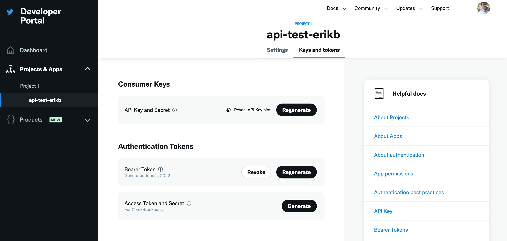

Lecture 28 (6/3/2022)¶
Announcements
Any late code assignments (labs, problem sets) due by 11:59pm Monday, 6/6 for up to 50% credit
Final projects due 11:59pm Wednesday, 6/8
Turn in (by email) one jupyter notebook with names of all project members
Please also include your data file or an external link to it so we can run your code!
Today’s agenda:
Course evals
Special topic: web scraping and APIs
import numpy as np
import pandas as pd
import matplotlib.pyplot as plt
import seaborn as sns
Course evals¶
Before we jump into content for today, I want to set aside 5 mins. for folks to complete course evaluations.
Here’s why you should take the time to fill them out:
I’m new to teaching so I take them seriously! Because I’m still figuring out how I like to teach, it’s important to me that I develop good habits, and your feedback helps.
This content matters and figuring out how to teach it well matters. If you have thoughts about what would have made it better, these aren’t just things I can incorporate into my own teaching, they’re things I can share with other teachers (including future CSS I and II professors).
Positive evaluations are an important part of evaluating teaching and academic job candidates. If there are things you like about the course, your feedback can help me and Purva continue to do this.
Purva and I have both put a ton of hours into this course (as have many of you!). Sharing what worked and what didn’t is an important part of evaluating anything you’ve put your valuable time and energy into!
So, I’m setting aside 5 mins. now for folks to open up their evals and at least get them started.
Head to: https://academicaffairs.ucsd.edu/Modules/Evals
Evaluations are due by 11:59pm on Monday, June 6th.
Data Sources in 2022¶
How to access data for building and testing models:
Use available datasets
Inter-university Consortium for Political and Social Research ICPSR
The list goes on…
Collect your own data from human subjects
On twitter
On other social media (tiktok??)
In the lab
Gather data from the web
Web scraping
APIs
In this course, we’ve mostly looked at pre-generated datasets like the ones in category 1 above (and in your final projects, you’ve encountered some of the challenges with this).
Collecting behavioral data online comes with a number of challenges of its own; you could teach a whole course on methodologies for this.
Today, we’ll talk a bit about another option, which is gathering data using web scraping and APIs.
Web Scraping¶
Web scraping is extracting data that’s available on publicly accessible websites to answer a research question or create a useful dataset.
Usually, it involves writing code to:
Send web requests to (often many) web pages to retrieve their HTML content
Processing or analyzing their HTML content to extract the desired data
Web scraping presents a unique opportunity to harvest large batches of data from the internet. Large text corpora from recipe sites or message boards, product information from Amazon or Walmart, etc. Cool!
However, in my opinion (others may disagree here), web scraping is a bit of a dying art. Why?
First, modern web pages load a lot of content dynamically, so your may need more advanced web scraping techniques to extract all the content you see when you load the page in a browser.
Second, many modern web pages, especially those that people historically scraped for information, have developed tools to discourage web scraping. Why? Because that’s their product! Try making a script to scrape product information from Amazon or flight information from United and you’ll quickly find your requests failing…
Third, many web pages have developed sophisticated APIs for fetching information from them. On the one hand, this gives you a much more structured and reliable response than merely web scraping. On the other hand, it also gives the web pages themselves much more control over what information you can request.
This doesn’t mean it’s useless! There are still lots of potentially great applications of it. To summarize: it’s a good skill to have in your data modeling toolbox, but it’s also important to be aware of the limitations.
With that, let’s take a quick peek!
Libraries¶
We’re going to use two libraries below.
The generic python requests library allows you to issue http requests to a given URL. Briefly, this involves sending a request to the server that stores the web content for a particular URL and asking it (in a very structured way) for that content. It’s what your browser does behind the scenes to fetch a website’s content anytime you visit a webpage.
Next, we’re going to use a popular python library called BeautifulSoup (home page) that was made specifically to support processing html content when web scraping.
import requests
from bs4 import BeautifulSoup # now we get beautiful soup
Web scraping example¶
We’re going to go fetch the wikipedia page for UCSD. You can check it out yourself here.
Below we start by using the requests library to go fetch the raw HTML content at the wikipedia link above.
url = 'https://en.wikipedia.org/wiki/University_of_California,_San_Diego'
response = requests.get(url)
What information does this give us?
status_codetells us if our request was successfulcontentgives us the actual content. But it’s not in a useful format right now.
response
response.status_code
type(response.content) # this doesn't help us so much...
bytes
This is where BeautifulSoup comes in!
BeautifulSoup gives us a bunch of functions for turning this response content byte string into something we can extract information from.
Step 1 is to convert it to a BeautifulSoup class. This is an object that stores the information in the HTML page in a very structured way, allowing us to pull all kinds of information out of it.
soup = BeautifulSoup(response.content, 'html.parser')
# soup.prettify()
Now, we can use available functions exported by the BeautifulSoup class to extract information from the HTML.
We’re not going to go through everything here, just a teaser. You can check out the full set of functions on their documentation page here.
# use `find_all` to get all instances of an HTML tag (div, p, etc.)
divs = soup.find_all('div')
len(divs)
ps = soup.find_all('p')
len(ps)
spans = soup.find_all('span')
len(spans) # yikes...
# divs
1459
With this, we can start to dissect what’s on the page using functions like get and attributes of the items themselves.
divs[0] # boring...
divs[1] # boring
# divs[2] # ah-ha!
<div class="noprint" id="mw-head-base"></div>
# Use the `get` function to get attributes of the HTML tag
divs[2].get('class')
# Use the `text` attribute to get the actual content inside the tag
# divs[2].text
['mw-body']
“Bottom-up” web scraping¶
Note, this has some powerful tools for “bottom up” web processing. In other words, extracting content from the page without any knowledge of how the page is structured (that wording is something I just called it, not a technical term for this!).
For example, without knowing anything about the structure of the page, we can find out all the other wikipedia pages it links to:
links = soup.find_all('a')
len(links)
# Let's see an example
links[3]
links[3].get('href')
links[3].text
# Let's use this to go figure out all the different external links on this page
link_lookup = {}
for elem in links:
if elem.text != '' and elem.get('href') is not None:
link_lookup[elem.text] = elem.get('href')
# link_lookup
The above is a bit clunky, but with a little additional processing we could figure out all the other wikipedia pages that our page connects to, or all the external web links that it references.
However, when web scraping, it’s often more useful to know something about the structure of the page you’re scraping and how to find the content you’re looking for.
This requires more manual work with the page itself.
“Top down” web scraping¶
What I’m calling “top down” web scraping (again, there may be more technical verbage for this) involves looking at the structure of the page ahead of time to allow for a more directed search for the information you want to extract.
Let’s take a look at the UCSD wikipedia page content in the browser and try to extract useful information that way.
Here, we’ll try to extract the number of students currently enrolled using a more careful, directed search informed by how the page is actually set up rather than just searching blindly.
NOTE: this requires a more advanced understanding of HTML code. If HTML is new to you, this should still be fairly understandable.
tables = soup.find_all('table')
len(tables) # what the heck...
# Let's get more specific
info_table = soup.find_all(attrs = {'class': 'infobox', 'class': 'vcard'})
len(info_table) # that's better
info_table = info_table[0]
info_table
# Now, let's go through the rows to extract the info we want
rows = info_table.find_all('tr')
len(rows)
for elem in rows:
row_key = elem.find_all('th')
if len(row_key) > 0 and row_key[0].text == "Students":
students = elem.find_all('td')[0].text
print(students)
42,875 (Fall 2021)[5]
That worked!
Now, we can leverage the consistent structure of wikipedia pages to try something more bold…
Remember the lecture at the beginning of this quarter where we did all kinds of python operations with a list of students across the UCs?
For class, I typed that in manually. Let’s go fetch it automatically!
def process_pages(url):
response = requests.get(url)
soup = BeautifulSoup(response.content, 'html.parser')
info_table = soup.find_all(attrs = {'class': 'infobox', 'class': 'vcard'})
if len(info_table) > 0:
info_table = info_table[0]
rows = info_table.find_all('tr')
for row in rows:
row_key = row.find_all('th')
if len(row_key) > 0 and row_key[0].text == "Students":
students = row.find_all('td')[0].text
return students
urls = {
'San Diego': 'https://en.wikipedia.org/wiki/University_of_California,_San_Diego',
'Berkeley': 'https://en.wikipedia.org/wiki/University_of_California,_Berkeley',
'Davis': 'https://en.wikipedia.org/wiki/University_of_California,_Davis',
'Irvine': 'https://en.wikipedia.org/wiki/University_of_California,_Irvine',
'Los Angeles': 'https://en.wikipedia.org/wiki/University_of_California,_Los_Angeles',
'Santa Barbara': 'https://en.wikipedia.org/wiki/University_of_California,_Santa_Barbara',
'Santa Cruz': 'https://en.wikipedia.org/wiki/University_of_California,_Santa_Cruz',
'Merced': 'https://en.wikipedia.org/wiki/University_of_California,_Merced',
'Riverside': 'https://en.wikipedia.org/wiki/University_of_California,_Riverside',
'San Francisco': 'https://en.wikipedia.org/wiki/University_of_California,_San_Francisco'
}
student_lookup = {}
for campus, url in urls.items():
student_lookup[campus] = process_pages(url)
student_lookup
{'San Diego': '42,875 (Fall 2021)[5]',
'Berkeley': '45,057 (fall 2021)[5]',
'Davis': '40,031 (Fall 2020–21)[7]',
'Irvine': '35,220 (2019)[6]',
'Los Angeles': '45,742 (Fall 2019)[9]',
'Santa Barbara': '26,314 (Fall 2019)[5]',
'Santa Cruz': '19,161 (fall 2020)[3]',
'Merced': '8,847 (Fall 2019)[6]',
'Riverside': '25,548 (2019)[7]',
'San Francisco': None}
That’s it on web scraping!
If you have some comfort with HTML and how web pages are organized, there’s a lot more you can do here.
But, as you can see, it’s pretty tedious and how far you can go with this depends in part on:
How consistently structured the pages you’re scraping are
Whether they have any kind of advanced rate limiting to prevent you from systematically requesting all their content
Many modern web pages will instead surface APIs that you can use to query information from the site.
APIs¶
What is an API??
API stands for Application Programming Interface. What it means is that it’s a structured way to request information from (and sometimes pass information to) a website.
For purposes of data analysis, it’s a lot like web scraping but with more structure. Like web scraping, it’s an exchange that happens between code you execute on your own computer and a distant web server with information you want to obtain.
Specifically:
The requester (you) sends a specific query that’s formatted to indicate what information they want
The receiver (a sever) sends a response in a format that’s easier for the requester to parse
APIs are defined by endpoints, which are just URLs that have been configured for people to request certain kinds of information from.
There’s a lot more to say about APIs and how they work, but this is enough to get us started.
API Examples¶
Let’s take a look at some examples!
Spotify API homepage (example requests we can make are here)
Facebook API homepage (facebook graph API is here and instagram graph API is here)
New York Times API homepage (great for fetching articles and text!)
Google maps API homepage (you can use this for lots of online mapping operations. Just ask uber or lyft!)
Giphy API homepage
…and many many more!
What you need to make API “requests”¶
For almost all publicly facing APIs like the ones above, your first step is to create a “developer account” so the API can track the requests you’re making.
Next, you create an “app” on your developer account. When you do this, the API will give you a set of “keys” or “tokens” that you can use to make requests against the API. This is confusing the first time around, but becomes a lot of copy-paste once you’ve done it.
For most APIs, you can view your apps and copy or regenerate keys on a page like this one:

On this page, the “bearer token” I created is what I use to make requests to the twitter API.
In the code below, I’m reading the “bearer token” from a file in the same directory as my code.
It’s important that you DO NOT put this information directly in your code, or even in the github repositories or other public places where you store your code. It’s like a password.
What’s in an API request?¶
A URL that says what information you want from the API
Note: this is where all the flexibility of APIs comes in. You can specify lots of different information using URL parameters
Some form of authentication key or token that you pass along to the request
This is what the API uses to ensure that you have a right to request the information you’re asking for
What gets returned by an API request?¶
The API request returns (at a minimum):
A status code indicating whether your request was successful
A structured response with the information you requested
The first step is usually to convert this to JSON so you can parse the response in your code
Let’s take a look!
import json
# The API request URL: this says what information I want
url = "https://api.twitter.com/2/users/by?usernames=ErikBrockbank"
# The bearer token I stored separately in a text file
bearer_token = open("twitter_bearer_token.txt", "r").readline()
# A function to formulate an "authentication" object with my bearer token
# NOTE function was copied directly from resources here, which the twitter api links to as well:
# https://github.com/twitterdev/Twitter-API-v2-sample-code/blob/main/Tweet-Lookup/get_tweets_with_bearer_token.py
def bearer_oauth(r):
r.headers["Authorization"] = f"Bearer {bearer_token}"
return r
# Now, I make a HTTP request just like I did in the web scraping example,
# but this time to the API url and with my authentication information included
response = requests.request("GET", url, auth=bearer_oauth)
# # Here's what I get back
print(response.status_code)
print(response.json())
# I can use this to extract my own twitter user ID (this was the whole point of this request...)
userid = response.json()['data'][0]['id']
---------------------------------------------------------------------------
FileNotFoundError Traceback (most recent call last)
<ipython-input-13-b5bee7dcd11f> in <module>
5
6 # The bearer token I stored separately in a text file
----> 7 bearer_token = open("twitter_bearer_token.txt", "r").readline()
8
9
FileNotFoundError: [Errno 2] No such file or directory: 'twitter_bearer_token.txt'
Neat! But this request just gave me my user ID.
That’s a bit boring, but now I can use that to request a whole batch of tweets from my own account using this API “endpoint”:
# Notice how this URL is different from the one above. I'm requesting from a new endpoint
url="https://api.twitter.com/2/users/{}/tweets".format(userid)
# Now I formulate the request hte same way I did above
response = requests.request("GET", url, auth=bearer_oauth)
# And presto! Look at this big batch of data!
print(response.status_code)
response_json = response.json()
response_json['data']
---------------------------------------------------------------------------
NameError Traceback (most recent call last)
<ipython-input-14-2640da40263a> in <module>
1 # Notice how this URL is different from the one above. I'm requesting from a new endpoint
----> 2 url="https://api.twitter.com/2/users/{}/tweets".format(userid)
3
4 # Now I formulate the request hte same way I did above
5 response = requests.request("GET", url, auth=bearer_oauth)
NameError: name 'userid' is not defined
Now, just for demonstration, I’ll show how you can get a whole bunch of additional information about a particular tweet by supplying particular “fields” in the API request.
I’m following the example here.
ids = "ids=1530327762803625984" # specific tweet ID
# I want all of the "fields" blow as part of the response
fields = "tweet.fields=created_at,author_id,lang,source,public_metrics,context_annotations,entities"
url = "https://api.twitter.com/2/tweets?{}&{}".format(ids, fields)
# Now, I formulate my request with the more complicated URL above
response = requests.request("GET", url, auth=bearer_oauth)
print(response.status_code)
print(response.json())
---------------------------------------------------------------------------
NameError Traceback (most recent call last)
<ipython-input-15-7783c30446bd> in <module>
6
7 # Now, I formulate my request with the more complicated URL above
----> 8 response = requests.request("GET", url, auth=bearer_oauth)
9 print(response.status_code)
10 print(response.json())
NameError: name 'bearer_oauth' is not defined
Your turn!¶
That’s all we’re going to cover on APIs!
There’s a lot more to say here but hopefully this gives you the ingredients to get started yourself.
The good news is, companies want people using their APIs, so there are a lot of resources available to help you get started.
If we have time left over, you can try creating a developer account with one of these APIs and making a request of your own.
### YOUR CODE HERE